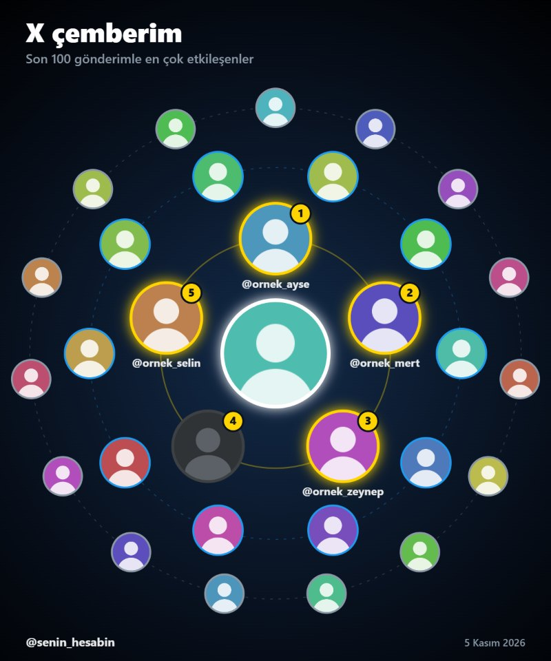

İstersen seçtiklerini takipten çıkarır: her hesap arasında 6–10 saniye, her 10 hesapta 5 dakika mola verir.
Güvenli mi?
Şifreni istemez. Zaten açık olan X oturumunu kullanır, sadece x.com ile konuşur.
X'in hız sınırına yaklaşınca kendiliğinden bekler. Yarıda kalırsa kaldığı yerden devam eder.
Tarama hesabında hiçbir şeyi değiştirmez. Takipten çıkarma sadece sen onaylarsan başlar.
Bilmen gereken: Kod X'in resmi olmayan web arayüzünü kullanır. Çok sayıda hesabı kısa sürede takipten çıkarmak hesabının geçici olarak kısıtlanmasına yol açabilir; varsayılan hızları düşürme. Konsola okumadığın bir kodu yapıştırma: bu kodun tamamı sağda.
Son gönderilerinle en çok kimin etkileştiğini bulur, bunu paylaşmalık bir çember görseline çevirir. Hiç etkileşmeyen takipçilerini ve en iyi paylaşım saatini de gösterir.
x.com sekmesinde F12'ye bas ve Console sekmesine geç.Mac'te Cmd + Option + J. Chrome yapıştırmaya izin vermezse önce allow pasting yazıp Enter'a bas.
Kodu yapıştır ve Enter'a bas. Açılan panelde kaç gönderiye bakılacağını seç ve Raporu oluştur'a bas.Panel "Bir adım gerekiyor" derse, söylediği sayfayı aynı sekmede aç; kendiliğinden devam eder.
Ne yapar
Çember: Ortada sen, en içte en çok etkileşen 5 kişi, dışa doğru sonraki 10 ve 15 kişi. Tek tuşla gönderi olarak paylaşılır. Göstermek istemediğin kişileri gizleyebilirsin.
Hayranlar: Kim kaç kez beğenmiş, yeniden göndermiş, yanıtlamış, alıntılamış ya da senden bahsetmiş. Alıntı ve bahsetme, beğeniden daha çok puan alır.
Hayaletler: Seni takip edip gönderilerine hiç dokunmayan takipçiler.
Gönderiler: Görüntülenme, etkileşim oranı, en iyi saat ve gün.

Örnek çember (isimler ve fotoğraflar uydurma).
Güvenli mi?
Sadece okur. Hesabında hiçbir şeyi değiştirmez, kimseyi takip etmez ya da beğenmez.
Şifreni istemez, sadece x.com ile konuşur. Paylaş düğmesi gönderiyi hazırlar, gönder tuşuna sen basarsın.
X'in hız sınırlarına uyar, gerekirse bekler. 100 gönderilik bir rapor genelde birkaç dakika sürer.
Bilmen gereken: X beğenileri gizli tuttuğu için sadece kendi gönderilerini kimin beğendiğini görebilirsin. Kod X'in resmi olmayan web arayüzünü kullanır; X bir şeyi değiştirirse bir kısmı çalışmayabilir.